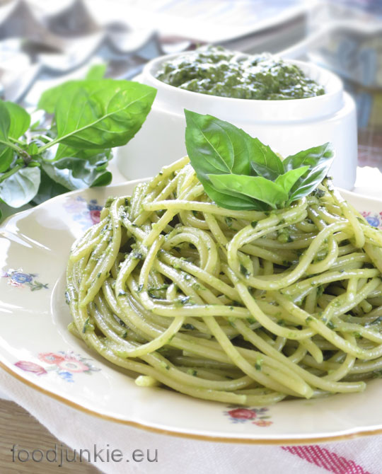

Pesto Pasta Recipe

Pesto Pasta your one of only pasta with green DNA
Ingredients
- 1(16 ounce) package pasta
- 2 tablespoons of olive oil
- 1/2 cup chopped onion
- 2 1/2 tablespoons pesto
- Salt (for taste)
- Ground black pepper (for taste)
- 2 tablespoons grated Parmesan cheese
Steps
-
Fill a large pot with lightly salted water and bring to a rolling boil.
Stir in pasta and return to a boil. Cook pasta uncovered, stirring
occasionally, until tender yet firm to the bite, about 8 to 10 minutes.
Drain and transfer into a large bowl.
-
Meanwhile, heat oil in a frying pan over medium-low heat. Add onion;
cook and stir until softened, about 3 minutes. Stir in pesto, salt, and
pepper until warmed through.
-
Add pesto mixture to hot pasta; stir in grated cheese and toss well to
coat.